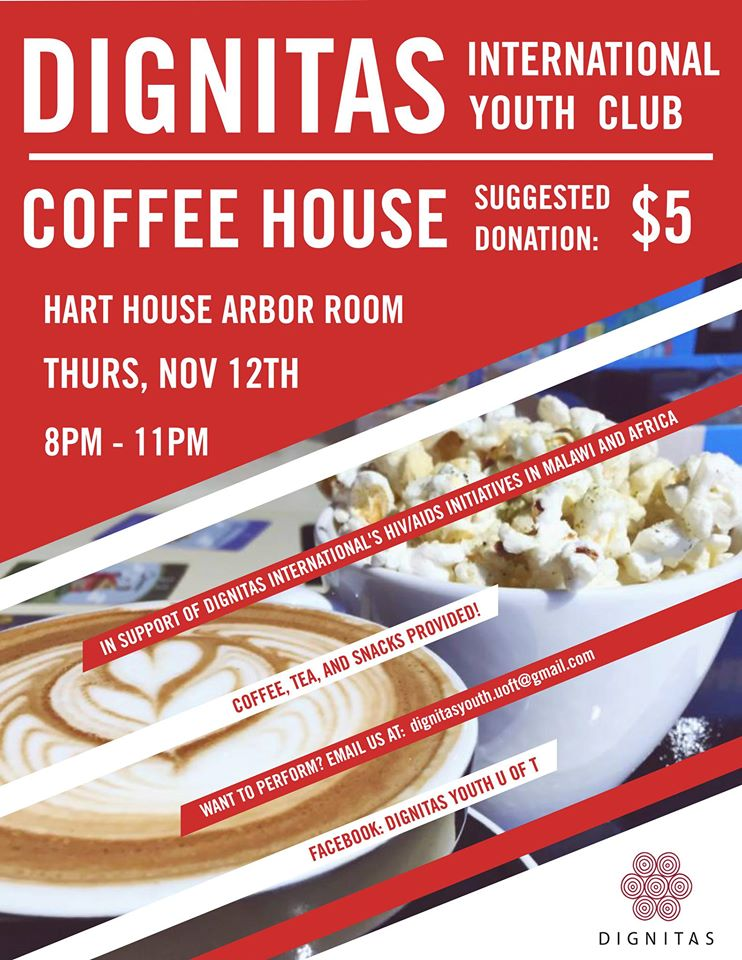

Dignitas CoffeeHouse
November 12, 2015
8:30am -11:00pm
Arbor Room, Hart House
Take a well-deserved break and come out to our first annual coffeehouse! Sink into a couch, release the inner foodie in you, and enjoy a cup of tea with delicious desserts and light snacks!
It’s not a coffeehouse without your amazing talent of course! You’re in for a night of amazing performances by talented singers, dancers, and poets! Feeling brave? Why not step into the spotlight and show the world what you’ve got?
If you have any burning questions or if you wish to perform, email us at dignitasyouth.uoft@gmail.com